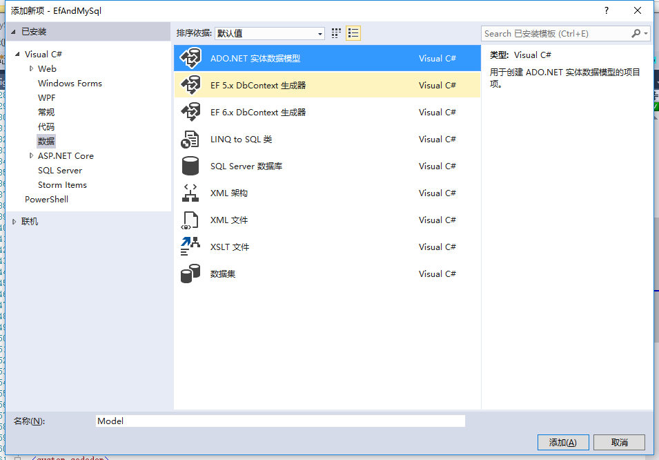
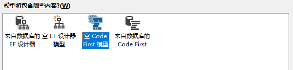
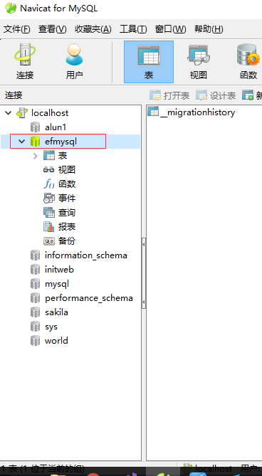

如何使用EF CodeFirst连接MySql数据库？
我们这篇文章介绍怎么使用EF连接MySql
作者的环境
VS2017、Win10、MySql5.x
前言
一般在EF中，默认是使用SqlServer数据库。
为什么我们要使用Mysql呢？
一方面现在的数据库多种多样，发展到了非关系数据库、内存数据存储等，不得不用其他的软件；
另一方面C#很早也开始了开源与支持多平台（core）的路程
开始新建项目
我们这里新建的是WebApi项目，当然你喜欢什么类型项目都一样。
我们新建项目叫EfAndMySql
开始安装包
install-package MySql.Data.Entity
我们这里的版本是6.9.9
此包因为是依赖EF包的，所以安装此包时会自动安装EF包。
开始添加codefirst
项目建完后，我们新建一个数据模型：右键->新建项->数据->ADO.NET实体数据模型。名字为Model，如下图：

点击添加后，我们选择【空Code First模型】

配置web.config
安装完成后，我们配置webconfig文件。
把原来的entityFramework节点换成：
<entityFramework codeConfigurationType="MySql.Data.Entity.MySqlEFConfiguration, MySql.Data.Entity.EF6">
<defaultConnectionFactory type="System.Data.Entity.Infrastructure.SqlConnectionFactory, EntityFramework"/>
<providers>
<provider invariantName="System.Data.SqlClient" type="System.Data.Entity.SqlServer.SqlProviderServices, EntityFramework.SqlServer" />
<provider invariantName="MySql.Data.MySqlClient" type="MySql.Data.MySqlClient.MySqlProviderServices, MySql.Data.Entity.EF6"></provider>
</providers>
</entityFramework>
把原来的connectionStrings换成我们MYSQL的连接：
<connectionStrings>
<add name="Model" connectionString="Data Source=localhost;port=3306;Initial Catalog=EfMysql;user id=root;password=root;" providerName="MySql.Data.MySqlClient"/>
</connectionStrings>
值得注意的是，程序是怎么验证我们连接的是Mysql数据库，而不是sqlserver呢？答案就在connectionString中的providerName="MySql.Data.MySqlClient"。 如果我们想用sqlserver或其他数据库的连接，导入相应的包，换连接与providerName就可以了。
输入命令与验证
在程序包管理器控制台以此输入：
enable-migrations
add-migration init
update-database
在看看我们的Mysql，成功安装了EfMysql的数据库：

到此，结束配置
转载 https://www.cnblogs.com/alunchen/p/7188562.html